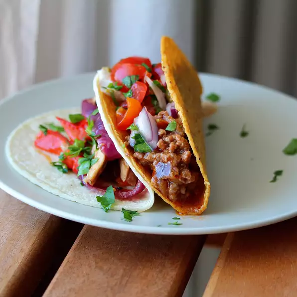

Taco Meat

Description
Easy to make Taco dish
Ingredients
- 1 pound lean ground beef
- ½ teaspoon onion powder
- ½ teaspoon garlic salt
Steps
- Step 1
Heat a large skillet over medium-high heat. Cook and stir beef in the hot skillet until browned and crumbly, 5 to 7 minutes.
- Step 2
Season beef with onion powder, garlic salt, celery salt, and cumin. Pour tomato sauce over the beef, stir to coat, and simmer until thickened, slightly, about 5 minutes.